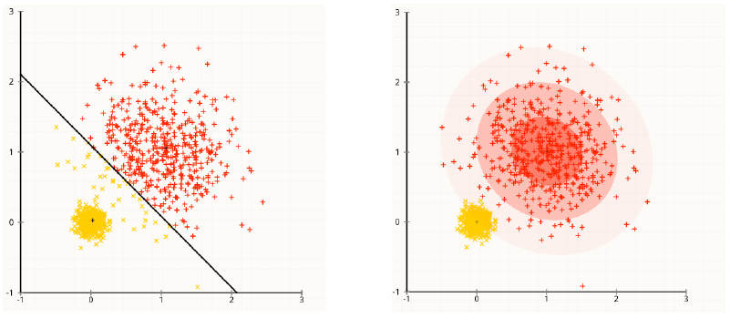
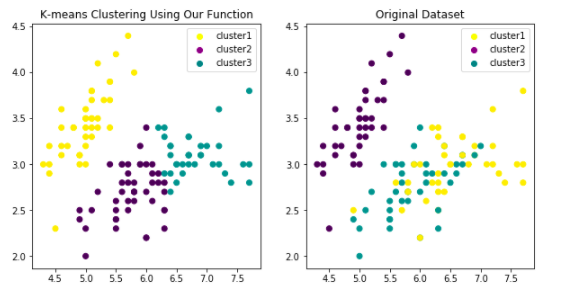

For everyone who is familiar with Machine Learning, k-means must be one of his first several algorithms that have learned. However, do you know k-means actually is just a special case of EM Algorithm? So, in this post, let me talk about EM algorithm and how it relates to k-means clustering.
1. EM Algorithm
EM algorithm is an efficient iterative procedure to compute the Maximum Likelihood Estimate in the process of missing or hidden data.
Normally, EM algorithm is used to solve the Finite Mixture Model parameter estimation problems. A finite mixture model is a distribution with density of the form: $$\pi(x) = \sum_{k=1}^{K}c_{k}p(x|\theta_{k})$$ where $c_k$ represents the relative cluster proportion, $\sum_{k=1}^{K}c_{k}=1$; $\theta_k$ is the model parameter in the $k^{th}$ cluster.
Since it is a parametric problem, we naturally think to use MLE to estimate the parameter $c_k$ and $\theta_k$. However, it is easy to show that it is analytically infeasible. (And also MLE will not tell us which cluster generate the data)Then it comes EM algorithm.
1.1 Overview
After knowing why we need EM algorithm, let us again explicit our goal: Estimate $c_k$ and $\theta_k$ without using MLE directly, at the same time knowing which cluster each data belongs to.
We solve this question by tactfully create a latent variable called (hard) assignment variable $M_{i}$. Basically, $M_{i}$ is like a one-hot encoding label that labels 1 if the data belongs to that cluster, 0 otherwise. We could see that if we have this variable, we could then:
- calculate $c_k = \frac{\# \ data \ in \ C_k}{n}$ since we know which cluster the data belongs to
- Use MLE to calculate $\theta_k$ in each cluster. For example, we will calculate $\mu_k$ and $\Sigma_k$ by using MLE if the cluster belongs to Gaussian Distribution.
Ok, now we know what kind of problem we want to solve: estimating the assignment variable.
1.2 Model Structure
There are two steps of EM algorithm. Basically, we assign the data point to the cluster that has a highest density value; and then re-calculate the parameter in each cluster.
E-step:
Based on what we now know about $c_k$ and $\theta_k$ (need to be initialize), calculate the likelihood of this data belongs to each cluster:
$$\begin{align*}
a_{ik} &= P(M_{i} = k|x_i) = \frac{p(M_i = k, x_i)}{p(x_i)} \\ &= \frac{p(x_i|M_i = k)p(M_i=k)}{p(x_i)} \\ &= \frac{p(x_i|\theta_k)c_k}{\sum_{l=1}^{K}p(x|\theta_{l})c_{l}}
\end{align*}$$
We call $a_i$ soft assignment variable, since it give us the probability of the data belongs to each cluster. and:
$$m_i := \arg \max_k a_{ik}$$
In a word, in E-step, we calculate the posterior probability of the data belongs to each cluster.
M-step:
After we have re-assign the data point, we then perform MLE to re-estimate $c_k$ and $\theta_k$, where $$c_k = \frac{\sum_{i=1}^{n}a_{ik}}{n}$$ and then use soft assignment to calculate $\theta_k$ (weighted mean and covariance)
These two steps are iterated repeatedly, until the likelihood or some parameter not even change. The convergence is assured since the algorithm is guaranteed to increase the likelihood at each iteration.
1.3 Some Notice
- EM algorithm can only find the local maximum, so we should restart EM with different initial values.
- We could calculate log-likelihood to compare the goodness of two EM output $\sum_i log \pi(x_i|c,\theta)$
2. K-means Clustering
2.1 Relation between EM and K-means
Then let us talk about k-means. How it relates to EM algorithm?
Suppose each cluster belongs to Gaussian density with the unit covariance: $p(x|\mu_k,I)$.
For E-step
Remember, k-means tries to minimize the total within cluster's variance: $$\sum_{k=1}^{K}\sum_{i \in C_k}(x_i-\mu_k)^2$$ which means, at each iteration, it tries to assign the data to the nearest centroid's cluster.
By comparison, EM assigns $x_i$ to the cluster that has the highest density value. Since the Gaussians have identical covariance (spherical), then the density $P(x_i|\mu_k,I)$is largest for the mean $\mu_k$ which is closest to $x_i$ in Euclidean distance. So, in E-step, they are identical.
For M-step
It is very clear these two methods are also identical. They both use MLE to calculate:
$$\hat{\mu_k} = \frac{1}{|i \in C_k|}\sum_{i \in C_k}x_i$$
So, now we could say that k-means is a special case of EM algorithm if we make some assumptions. But how these assumptions influence k-means?
2.2 Assumptions for K-means
K-means do make some very strong assumptions to simplify the EM algorithm. Here are the assumptions:
- All variables have the same variance
- The prior probability for all k clusters are the same (each cluster has roughly equal number of observations)
- The variance of the distribution of each variable is spherical (proportionate to the identity)
So, we could see these assumptions can be easily violated. (Notice to scale the data before using k-means)

3. K-medoids
There is another method that is very similar to k-means. The difference is that we will choose the observation to work as the centroid to minimize the pairwise distance. Here are the comparisons:
- K-medoids is more flexible. Since we can use different similarity measure.
- K-medoids is more robust. Since the median is more robust to outliers than the arithmetic mean
- K-medoids is more expensive. Since we need to calculate the pairwise distance everytime to find the centroid.
4. Model Implementation
Then let me construct K-means model from scratch. As normal, I will compare my result with sklearn.cluster.KMeans in the end. Here is the plot of my model:

And here is the link of Jupyter Notebook For K-means
Reference:
Book: An Introduction to Statistical Learning
https://www.cs.utah.edu/~piyush/teaching/EM_algorithm.pdf
https://stackoverflow.com/questions/21619794/what-makes-the-distance-measure-in-k-medoid-better-than-k-means https://stats.stackexchange.com/questions/133656/how-to-understand-the-drawbacks-of-k-means